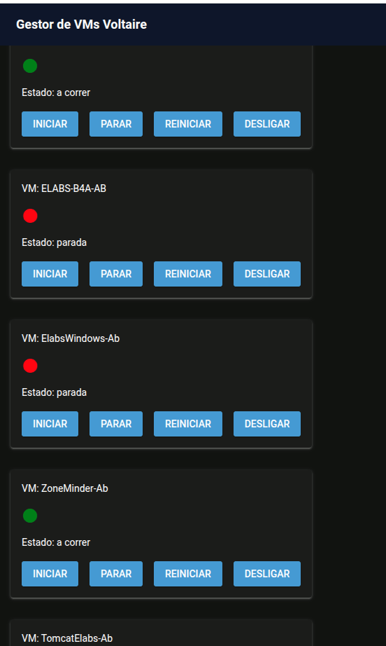
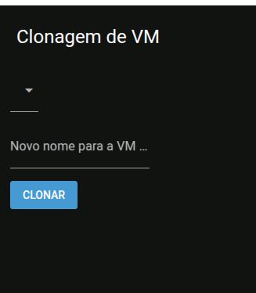
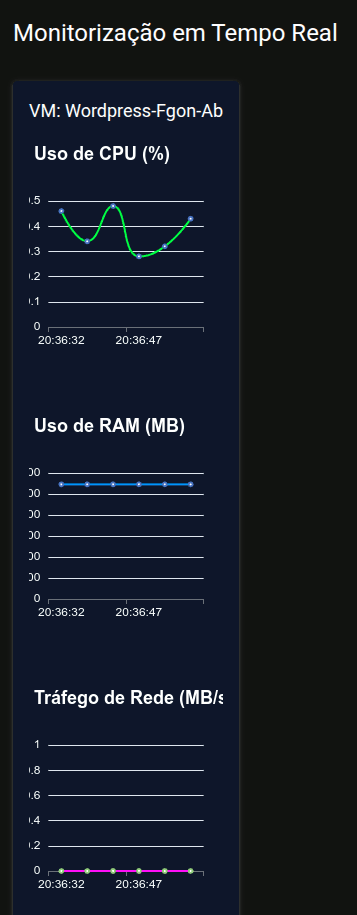
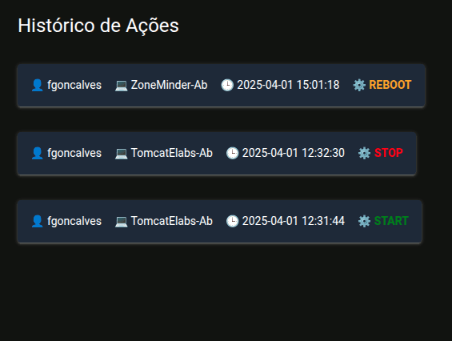
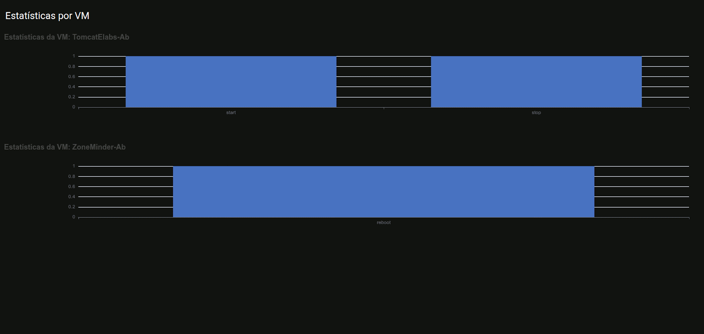
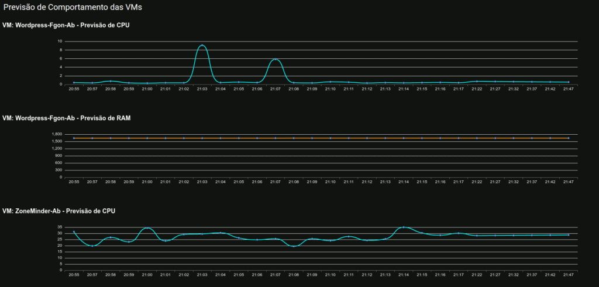

O KVM Manager nasce da necessidade de um sistema de gestão de máquinas virtuais KVM que seja moderno, visualmente apelativo, intuitivo e expandido com inteligência. Mais do que apenas gerir, este sistema observa, aprende, antecipa e protege. Foi concebido para utilizadores técnicos, sysadmins e visionários que desejam ter controlo total sobre os seus ambientes de virtualização, com simplicidade e sofisticação.
Funções Principais
1. Autenticação Segura
Login com verificação de utilizador e palavra-passe (hash bcrypt)
Sessões protegidas com storage_secret
2. Dashboard Interativo

Visualização de todas as VMs e o seu estado atual (ligada, parada, com problemas)
Controlo direto: Start, Stop, Reboot, Shutdown
Semáforo visual do estado de cada VM
3. Clonagem Inteligente de VMs

Clonagem automática de VMs existentes
Detecção do caminho real do disco
Ajuste de permissões (libvirt-qemu:kvm) e nome da nova VM
4. Monitorização em Tempo Real

Gráficos em tempo real de:
Uso de CPU
Consumo de RAM
Tráfego de rede (RX / TX)
Cores vibrantes e fundo adaptado ao tema escuro
5. Registo de Logs

Histórico completo de ações: utilizador, VM, ação, data/hora
Visualização em cartões coloridos e texto branco para fácil leitura
6. Estatísticas e Análise

Contadores de ações por VM
Base para futuras visualizações analíticas
7. Previsões com IA

Recolha contínua de dados (via cron)
Previsão de uso futuro de CPU e RAM por VM com regressão linear
Visualização gráfica clara das tendências
8. Backups Automatizados
Script de backup completo das VMs, agendado por cron
Armazenamento em diretório seguro
Ideal para proteção contra falhas
Tecnologias Utilizadas
Python com NiceGUI (framework web visual e reativa)
MySQL como base de dados relacional
libvirt / KVM como motor de virtualização
Pandas, Scikit-learn para IA
Cron + Bash para automatismos
ntfy (opcional) para alertas móveis
Visão
Um gestor de VMs com alma de assistente pessoal. Que não apenas executa ordens — mas antecipa necessidades, protege recursos e oferece clareza em tempo real.
Para uma demo ou informação sobre este produto contactar por e-mail : support@softelabs.pt